以下是可以在122.0.65.73 23333端口使用的先行卡的列表。下载补丁后即可使用。
使用方法：原版游戏下载补丁后解压至游戏文件夹，YGOMobile请自定义数据库（方法请查看压缩包内使用说明），暂不保证对其他版本的支持。
资料来源：任天堂世界论坛。
脚本作者：ygopro-pre-script，YGOPRO。目前所有脚本来自于以上这2个项目，在此对各自的贡献者表示感谢。
版权声明：转载请注明出自本页面，并完整保留附带的使用说明文档。如果您想对本项目进行修改，请移步这里，但我们建议您直接参与官方项目ygopro-pre-script。
星星和加号图标是Yusuke Kamiyamane的作品。
更新记录
- 2016-09-28 11:05
- 修复：十二兽 蛇笞的攻击力·守备力。
- 修复：古代的机械苏生会使不受效果影响的怪兽上升攻击力的问题。
- 2016-09-28 01:40
- 修复：十二兽 猪弓不能直接攻击的问题。
- 2016-09-28 00:00
- 新卡：幻创之混种恐龙、十二兽新卡8张。
- 2016-09-25 22:14
- 新卡：愚蠢的副葬。
- 修复：电子化芭蕾练习裙不能解放手卡怪兽特殊召唤的问题。
- 2016-09-24 22:27
- 更新：删除已经正式更新的卡。
- 2016-09-23 22:15
- 新卡：电子化芭蕾练习裙、十二兽 德兰西娅、通向魂源的影劫回归、太空直线加速赛车。
- 2016-09-22 10:21
- 修复：灵魂鸟神-彦孔雀回到手卡效果在部分情况下无法发动的问题，修复提示显示为问号的问题。
- 2016-09-21 23:31
- 新卡：古代的机械混沌巨人、灵魂的据所、河伯、影之卡组破坏病毒。
- 更新：优化部分卡图。
- 2016-09-20 19:16
- 修复：古代的齿车机械攻击时会使魔法·陷阱卡的效果也不能发动的问题。
- 修复：古代的机械合成龙会使古代的机械怪兽被攻击时对方也不能发动效果的问题。
- 修复：古代的机械苏生效果只能使用1次的问题。
- 修复：不知火流 轮回之阵1效果应为除外怪兽。
- 2016-09-19 17:11
- 新卡：近期VJ与官推公布新卡共13张。
- 2016-09-12 02:10
- 新卡：古代的机械猎犬、古代的机械要塞。
- 更新：优化部分卡图。
- 2016-09-08 21:24
- 新卡：古代的机械要塞、幻想之见习魔导师。古代的机械要塞暂未确认。
- 2016-09-05 23:44
- 修复：精灵兽使 薇茵妲的字段。
- 2016-09-05 23:38
- 新卡：精灵兽使 薇茵妲。
- 更新：优化部分卡图。
- 2016-09-03 22:28
- 新卡：水晶机巧-黑晶、水晶机巧-柠晶龙。
- 修复：超重忍者 忍足-A·C在准备阶段被破坏不发动效果的问题。
- 2016-08-28 20:53
- 新卡：超重忍者 忍足-A·C。
- 修复：光波异邦臣不能在手卡发动的问题。
- 修复：参考最终一战！的调整，超级量子必杀 阿尔方球应能在对方没有怪兽可特殊召唤的场合发动。
- 修复：光波分光部分情况下不能发动的问题。
- 2016-08-24 22:04
- 新卡：超级量子必杀 阿尔方球。
- 更新：优化部分卡图。
- 2016-08-22 00:33
- 修复：风魔女-冰铃在场上有怪兽的场合也能特殊召唤的问题。
- 2016-08-21 21:34
- 修复：风魔女-冰铃额外卡组特殊召唤限制无效的问题。
- 更新：删除已经正式更新的卡。
- 2016-08-21 13:13
- 修复：疾行机人 OMK口香糖不能增加攻击力的问题。
- 2016-08-20 21:27
- 修复：疾行机人 竹马高跷②效果无法使用的问题。
- 2016-08-20 20:07
- 修复：补全新卡列表。
- 2016-08-20 19:05
- 新卡：疾行机人 竹马高跷、风魔女-冰铃、光波分光。
- 2016-08-18 21:06
- 修复：超银河眼光波龙只能获取1只怪兽控制权的问题。
- 修复：疾行机人 OMK口香糖同调召唤效果应为战斗阶段任意时点发动。
- 2016-08-18 02:01
- 修复：降龙之魔术师加倍攻击力效果无效的问题。
- 修复：风魔女-雪铃从手卡特殊召唤效果无效的问题。
- 修复：勇猛眼灵摆龙无法使用的问题。
- 修复：古代的机械飞龙应为检索「古代的机械」卡，修复发动后可以把魔法·陷阱卡盖放的问题。
- 修复：部分效果提示不显示的问题。
- 2016-08-17 21:37
- 新卡：VJMP新卡共11张。
- 更新：删除已经正式更新的卡。
- 2016-08-03 22:45
- 修复：部分卡发动时的提示显示为问号的问题。
- 更新：更改部分卡名，优化部分卡图。
卡片列表
| 卡图 | 卡名 | 效果 |
|---|---|---|
| 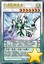 | 幻透翼疾速龙 | [怪兽|效果|同调|灵摆] 龙/风 [★7] 2500/2000 4/4 ←4 【灵摆】 4→ 「幻透翼疾速龙」的灵摆效果1回合只能使用1次。 ①：把等级合计直到7的自己场上的表侧表示的1只「疾行机人」调整和1只调整以外的怪兽送去墓地才能发动。灵摆区域的这张卡特殊召唤。 【怪兽效果】 调整＋调整以外的风属性怪兽1只以上 「幻透翼疾速龙」的①的怪兽效果1回合只能使用1次。 ①：以从额外卡组特殊召唤的对方场上1只表侧表示怪兽为对象才能发动。直到回合结束时，那只怪兽的攻击力变成0，效果无效化。这个效果在对方回合也能发动。 ②：怪兽区域的这张卡被战斗·效果破坏的场合才能发动。这张卡在自己的灵摆区域放置。 |
 | 毛绒动物·章鱼 | [怪兽|效果] 天使/水 [★1] 800/800 「毛绒动物·章鱼」的①②的效果1回合各能使用1次。 ①：这张卡召唤·特殊召唤成功时，以自己墓地1只「毛绒动物」怪兽或者「锋利小鬼」怪兽为对象才能发动。那只怪兽加入手卡。 ②：这张卡成为「魔玩具」融合怪兽的融合召唤的素材送去墓地的场合，以除外的最多2只自己怪兽为对象才能发动。那些怪兽回到墓地。 |
 | 魔玩具·钩乌贼 | [怪兽|效果|融合] 恶魔/水 [★8] 2200/3000 「锋利小鬼」怪兽＋「毛绒动物」怪兽 ①：1回合1次，以对方场上1只怪兽为对象才能发动。那只怪兽送去墓地。这个效果发动的回合，这张卡不能直接攻击。 ②：这张卡在同1次的战斗阶段中可以作2次攻击。 ③：这张卡进行战斗的战斗阶段结束时才能发动。这张卡变成守备表示。 |
 | 太空直线加速赛车 | [陷阱|永续] 把这张卡作为效果怪兽特殊召唤（机械族·调整·炎·1星·攻0/守1800）。（这张卡也当作陷阱卡使用。）只要这张卡的效果特殊召唤的这张卡在怪兽区域存在，其他的自己场上的调整怪兽不会被战斗或者对方的卡的效果破坏。 |
 | 降龙之魔术师 | [怪兽|效果|灵摆] 魔法师/暗 [★7] 2400/1000 2/2 ←2 【灵摆】 2→ ①：1回合1次，以场上1只表侧表示怪兽为对象才能发动。那只怪兽的种族直到对方回合结束时变成龙族。 【怪兽效果】 ①：1回合1次，自己主要阶段才能发动。这张卡的种族直到回合结束时变成龙族。 ②：场上的这张卡为素材作融合·同调·超量召唤的怪兽得到以下效果。 ●这张卡和龙族怪兽进行战斗的伤害步骤内，这张卡的攻击力变成原本攻击力的2倍。 |
 | 疾行机人 OMK口香糖 | [怪兽|效果|调整] 机械/风 [★1] 0/800 ①：自己·对方的战斗阶段自己因战斗·效果受到伤害的场合才能发动。这张卡从手卡特殊召唤。 ②：这张卡的效果让这张卡特殊召唤成功的战斗阶段才能发动。只用包含这张卡的自己场上的风属性怪兽为同调素材作同调召唤。 ③：这张卡作为同调素材送去墓地的场合才能发动。自己卡组最上面的卡送去墓地，那张卡是「疾行机人」怪兽的场合，这张卡为同调素材的同调怪兽的攻击力上升1000。 |
 | 疾行机人 竹马高跷 | [怪兽|效果] 机械/风 [★4] 1100/1100 「疾行机人 竹马高跷」的②的效果1回合只能使用1次。 ①：这张卡召唤成功时才能发动。从手卡把1只4星以下的「疾行机人」怪兽特殊召唤。 ②：把墓地的这张卡除外才能发动。从卡组把1只风属性怪兽送去墓地。这个效果在这张卡送去墓地的回合不能发动。 |
 | 风魔女-冰铃 | [怪兽|效果] 魔法师/风 [★3] 1000/1000 「风魔女-冰铃」的①②的效果1回合各能使用1次。 ①：自己场上没有怪兽存在的场合才能发动。这张卡从手卡特殊召唤。那之后，可以从卡组把1只「风魔女」怪兽特殊召唤。这个效果从卡组特殊召唤的怪兽不能解放，这个效果发动的回合，自己不是5星以上的风属性怪兽不能从额外卡组特殊召唤。 ②：这张卡召唤·特殊召唤成功的场合才能发动。给与对方500伤害。 |
 | 风魔女-雪铃 | [怪兽|效果|调整] 魔法师/风 [★1] 100/100 ①：自己场上有风属性怪兽2只以上存在，没有风属性以外的怪兽存在的场合才能发动。这张卡从手卡特殊召唤。 ②：用这张卡为同调素材把风属性同调怪兽同调召唤的场合，那只同调怪兽不会被对方的效果破坏。 |
| 电子化芭蕾练习裙 | [怪兽|效果] 战士/地 [★5] 1800/1600 ①：这张卡可以从自己的手卡·场上把1只战士族或者天使族怪兽解放从手卡特殊召唤。 ②：这张卡为仪式召唤而被解放的场合，以自己墓地1张仪式魔法卡为对象才能发动。那张卡加入手卡。 | |
 | 光波异邦臣 | [怪兽|效果] 魔法师/光 [★1] 0/0 「光波异邦臣」的①②的效果1回合只能有1次使用其中任意1个。 ①：这张卡在手卡·墓地存在的场合，以自己场上1只「光波」超量怪兽为对象才能发动。把这张卡在那只怪兽下面重叠作为超量素材。 ②：这张卡被送去墓地的场合才能发动。从卡组把1张「光波」魔法·陷阱卡加入手卡。 |
| 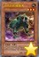 | 古代的机械猎犬 | [怪兽|效果] 机械/地 [★3] 1000/1000 ①：这张卡召唤成功的场合发动。给与对方600伤害。 ②：这张卡攻击的场合，对方直到伤害步骤结束时魔法·陷阱卡不能发动。 ③：1回合1次，自己主要阶段才能发动。从自己的手卡·场上把「古代的机械」融合怪兽卡决定的融合素材怪兽送去墓地，把那1只融合怪兽从额外卡组融合召唤。 |
| 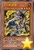 | 十二兽 鼠骑 | [怪兽|效果] 兽战士/地 [★4] 0/0 ①：这张卡召唤成功的场合才能发动。从卡组把1张「十二兽」卡送去墓地。 ②：持有这张卡作为素材中的原本种族是兽战士族的超量怪兽得到以下效果。 ●1回合1次，把这张卡1个超量素材取除才能发动。从手卡·卡组把1只「十二兽 鼠骑」特殊召唤。 |
| 十二兽 兔铳 | [怪兽|效果] 兽战士/地 [★4] 800/800 ①：这张卡被战斗·效果破坏的场合，以「十二兽 兔铳」以外的自己墓地1张「十二兽」卡为对象才能发动。那张卡加入手卡。 ②：持有这张卡作为素材中的原本种族是兽战士族的超量怪兽得到以下效果。 ●这张卡为对象的对方的魔法卡的效果发动时，把这张卡1个超量素材取除才能发动。那个发动无效。 | |
| 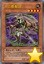 | 十二兽 蛇笞 | [怪兽|效果] 兽战士/地 [★4] 1200/400 ①：以自己场上1只兽战士族超量怪兽为对象才能发动。把自己的手卡·场上的这张卡在那只怪兽下面重叠作为超量素材。这个效果在对方回合也能发动。 ②：持有这张卡作为素材中的原本种族是兽战士族的超量怪兽得到以下效果。 ●这张卡和对方怪兽进行战斗的伤害计算后发动。那只对方怪兽除外。 |
| 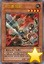 | 十二兽 马剑 | [怪兽|效果] 兽战士/地 [★4] 1600/0 ①：这张卡召唤·特殊召唤成功的场合才能发动。从手卡丢弃1张「十二兽」卡，自己从卡组抽1张。 ②：持有这张卡作为素材中的原本种族是兽战士族的超量怪兽得到以下效果。 ●这张卡向守备表示怪兽攻击的场合，给与攻击力超过那个守备力的数值的战斗伤害。 |
| 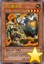 | 十二兽 羊冲 | [怪兽|效果] 兽战士/地 [★4] 400/2000 ①：这张卡被战斗·效果破坏的场合，以「十二兽 羊冲」以外的自己墓地1只「十二兽」怪兽为对象才能发动。那只怪兽特殊召唤。 ②：持有这张卡作为素材中的原本种族是兽战士族的超量怪兽得到以下效果。 ●这张卡为对象的对方的陷阱卡的效果发动时，把这张卡1个超量素材取除才能发动。那个发动无效。 |
| 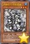 | 水晶机巧-黑晶 | [怪兽|效果|调整] 机械/水 [★3] 500/500 「水晶机巧-黑晶」的效果1回合只能使用1次。 ①：对方的主要阶段以及战斗阶段，以调整以外的除外的1只自己怪兽为对象才能发动。那只怪兽效果无效特殊召唤，只用那只怪兽和这张卡为素材把1只机械族同调怪兽同调召唤。那个时候的同调素材怪兽不去墓地回到持有者卡组。 |
| 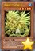 | 水晶机巧-柠晶龙 | [怪兽|效果] 机械/水 [★5] 2000/1500 「水晶机巧-柠晶龙」的①②的效果1回合各能使用1次。 ①：这张卡在手卡·墓地存在的场合，把「水晶机巧-柠晶龙」以外的1张「水晶机巧」卡从手卡丢弃才能发动。这张卡守备表示特殊召唤。那之后，选自己场上1张卡破坏。 ②：场上的这张卡被战斗·效果破坏的场合才能发动。从卡组把1只「水晶机巧」怪兽守备表示特殊召唤。 |
| 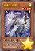 | 灵魂鸟-巫鹤 | [怪兽|效果|灵魂] 鸟兽/风 [★4] 1500/1500 这张卡不能特殊召唤。 ①：1回合1次，这张卡在怪兽区域存在，这张卡以外的灵魂怪兽召唤·特殊召唤成功的场合才能发动。自己从卡组抽1张。 ②：这张卡召唤·反转的回合的结束阶段发动。这张卡回到持有者手卡。 |
| 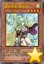 | 精灵兽使 薇茵妲 | [怪兽|效果] 念动力/风 [★4] 1600/1800 自己对「精灵兽使 薇茵妲」1回合只能有1次特殊召唤。 ①：这张卡被对手破坏的场合才能发动。从卡组或者额外卡组将1只「灵兽」怪兽无视召唤条件特殊召唤。 |
| 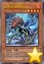 | 幻创之混种恐龙 | [怪兽|效果] 恐龙/炎 [★4] 1800/1000 「幻创之混种恐龙」的②的效果1回合只能使用1次。 ①：自己·对方的主要阶段把这张卡从手卡送去墓地才能发动。那次主要阶段内，自己场上的恐龙族怪兽不受对方发动的效果影响。 ②：从自己墓地把包含这张卡的恐龙族怪兽任意数量除外才能发动。和除外的怪兽数量相同等级的1只恐龙族怪兽从卡组特殊召唤。这个效果特殊召唤的怪兽在结束阶段破坏。 |
| 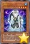 | 河伯 | [怪兽|效果|灵魂] 水/水 [★4] 1800/600 这张卡不能特殊召唤。 ①：这张卡召唤·反转的场合，以场上1只表侧表示怪兽为对象才能发动。那只表侧表示怪兽变成当作灵魂怪兽使用，结束阶段回到持有者手卡。 ②：这张卡召唤·反转的回合的结束阶段发动。这张卡回到持有者手卡。 |
| 电子化天使-那沙帝弥- | [怪兽|效果|仪式] 天使/光 [★5] 1000/1000 「机械天使的仪式」降临。 ①：1回合1次，以自己场上1只表侧表示怪兽为对象才能发动。自己基本分回复那只怪兽的攻击力一半的数值。 ②：自己的仪式怪兽被选择作为攻击对象时才能发动。那次攻击无效。 ③：这张卡在墓地存在的场合，从自己墓地把这张卡以外的1只「电子化天使」怪兽除外，以对方场上1只怪兽为对象才能发动。这张卡从墓地特殊召唤，得到作为对象的怪兽的控制权。 | |
| 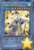 | 灵魂鸟神-彦孔雀 | [怪兽|效果|仪式|灵魂] 鸟兽/风 [★8] 3000/2500 「灵魂的降神」降临。这张卡不用仪式召唤不能特殊召唤。 ①：这张卡仪式召唤成功的场合才能发动。选对方场上最多3只怪兽回到持有者手卡。那之后，可以从手卡把1只4星以下的灵魂怪兽无视召唤条件特殊召唤。 ②：这张卡特殊召唤的回合的结束阶段发动。这张卡回到持有者手卡，在自己场上把2只「灵魂鸟衍生物」（鸟兽族·风·4星·攻/守1500）特殊召唤。 |
 | 勇猛眼灵摆龙 | [怪兽|效果|融合] 龙/暗 [★8] 3000/2000 「灵摆龙」怪兽＋战士族怪兽 ①：这张卡融合召唤成功时才能发动。对方场上的全部怪兽的攻击力变成0。这个回合，这张卡以外的自己怪兽不能攻击。 ②：只要这张卡在怪兽区域存在，攻击力0的怪兽发动的效果无效化。 ③：这张卡的攻击没让对方怪兽被破坏的伤害步骤结束时才能发动。那只对方怪兽除外。 |
| 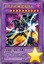 | 古代的机械混沌巨人 | [怪兽|效果|融合] 机械/暗 [★10] 4500/3000 「古代的机械」怪兽×4 这张卡不用融合召唤不能特殊召唤。 ①：只要这张卡在怪兽区域存在，这张卡不受魔法·陷阱卡的效果影响，对方在战斗阶段中不能把怪兽的效果发动。 ②：这张卡可以向对方怪兽全部各作1次攻击，向守备表示怪兽攻击的场合，给与攻击力超过那个守备力的数值的战斗伤害。 |
| 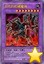 | 古代的机械魔神 | [怪兽|效果|融合] 机械/地 [★8] 1000/1800 「古代的机械」怪兽×2 「古代的机械魔神」的②的效果1回合只能使用1次。 ①：这张卡不受其他卡的效果影响。 ②：自己主要阶段才能发动。给与对方1000伤害。 ③：这张卡被战斗破坏送去墓地的场合才能发动。从卡组把1只「古代的机械」怪兽无视召唤条件特殊召唤。 |
 | 风魔女-冬铃 | [怪兽|效果|同调] 魔法师/风 [★7] 2400/2000 调整＋调整以外的风属性怪兽1只以上 「风魔女-冬铃」的①②的效果1回合各能使用1次。 ①：以自己墓地1只「风魔女」怪兽为对象才能发动。给与对方那只怪兽的等级×200伤害。 ②：自己·对方的战斗阶段以自己场上1只「风魔女」怪兽为对象才能发动。把持有那只怪兽的等级以下的等级的1只怪兽从手卡特殊召唤。这个效果特殊召唤的怪兽在这个回合不能攻击。 |
 | 超重忍者 忍足-A·C | [怪兽|效果|同调] 机械/地 [★7] 1200/2800 机械族调整＋调整以外的机械族怪兽1只以上 这张卡在规则上也当作「超重武者」卡使用。 ①：这张卡可以用表侧守备表示的状态作出攻击。那个场合，这张卡用守备力当作攻击力使用进行伤害计算。 ②：自己墓地没有魔法·陷阱卡存在的场合才能发动。这张卡的原本守备力直到回合结束时变成一半，这个回合这张卡可以直接攻击。 ③：这张卡被效果破坏送去墓地的场合，下次的准备阶段才能发动。这张卡从墓地特殊召唤。 |
| 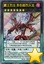 | 霸王烈龙 异色眼烈火龙 | [怪兽|效果|超量|灵摆] 龙/暗 [☆7] 3000/2500 1/1 ←1 【灵摆】 1→ ①：1回合1次，另一边的自己的灵摆区域没有卡存在的场合才能发动。从卡组选1只灵摆怪兽在自己的灵摆区域放置。 【怪兽效果】 龙族7星怪兽×2 7星可以灵摆召唤的场合在额外卡组的表侧表示的这张卡可以灵摆召唤。 ①：超量怪兽为素材作超量召唤的这张卡得到以下效果。 ●这张卡在同1次的战斗阶段中可以作2次攻击。●1回合1次，把这张卡1个超量素材取除才能发动。对方场上的卡全部破坏，这张卡的攻击力直到回合结束时上升破坏的卡数量×200。 ②：怪兽区域的这张卡被破坏的场合才能发动。这张卡在自己的灵摆区域放置。 |
 | 超银河眼光波龙 | [怪兽|效果|超量] 龙/光 [☆9] 4500/3000 9星怪兽×3 ①：这张卡有「光波」卡在作为超量素材的场合，得到以下效果。 ●1回合1次，把这张卡最多3个超量素材取除才能发动。选取除数量的对方场上的表侧表示怪兽，那些控制权直到结束阶段得到。这个效果得到控制权的怪兽的效果无效化，攻击力变成4500，卡名当作「超银河眼光波龙」使用。这个效果的发动后，直到回合结束时这张卡以外的自己怪兽不能直接攻击。 |
| 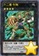 | 十二兽 牛犄 | [怪兽|效果|超量] 兽战士/地 [☆4] ?/? 4星怪兽×2 「十二兽 牛犄」1回合1次也能在同名卡以外的自己场上的「十二兽」怪兽上面重叠来超量召唤。 ①：这张卡的攻击力·守备力上升这张卡作为超量素材中的「十二兽」怪兽的各自数值。 ②：1回合1次，把这张卡1个超量素材取除才能发动。从卡组把1只可以通常召唤的兽战士族怪兽加入手卡。 |
| 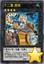 | 十二兽 虎炮 | [怪兽|效果|超量] 兽战士/地 [☆4] ?/? 4星怪兽×3 「十二兽 虎炮」1回合1次也能在同名卡以外的自己场上的「十二兽」怪兽上面重叠来超量召唤。 ①：这张卡的攻击力·守备力上升这张卡作为超量素材中的「十二兽」怪兽的各自数值。 ②：1回合1次，把这张卡1个超量素材取除，以自己场上1只超量怪兽和自己墓地1只「十二兽」怪兽为对象才能发动。那只「十二兽」怪兽在那只超量怪兽下面重叠作为超量素材。 |
| 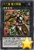 | 十二兽 龙枪 | [怪兽|效果|超量] 兽战士/地 [☆4] ?/? 4星怪兽×4 「十二兽 龙枪」1回合1次也能在同名卡以外的自己场上的「十二兽」怪兽上面重叠来超量召唤。 ①：这张卡的攻击力·守备力上升这张卡作为超量素材中的「十二兽」怪兽的各自数值。 ②：1回合1次，把这张卡1个超量素材取除，以场上1张表侧表示的卡为对象才能发动。那张卡破坏。这个效果在对方回合也能发动。 |
| 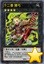 | 十二兽 猪弓 | [怪兽|效果|超量] 兽战士/地 [☆4] ?/? 4星怪兽×5 「十二兽 猪弓」1回合1次也能在同名卡以外的自己场上的「十二兽」怪兽上面重叠来超量召唤。 ①：这张卡的攻击力·守备力上升这张卡作为超量素材中的「十二兽」怪兽的各自数值。 ②：这张卡可以向对方直接攻击。 ③：持有的超量素材数量是12以上的这张卡给与对方战斗伤害时才能发动。对方的手卡·场上的卡全部送去墓地，那之后，这张卡变成守备表示。 |
| 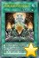 | 机械天使的绝对仪式 | [魔法|仪式] 「电子化天使」仪式怪兽的降临必需。 ①：等级合计直到变成和仪式召唤的怪兽相同为止，把自己的手卡·场上的怪兽解放或者作为解放的代替而从自己墓地让天使族或者战士族的怪兽回到卡组，从手卡把1只「电子化天使」仪式怪兽仪式召唤。 |
 | 升阶魔法-光波升华 | [魔法|速攻] ①：自己·对方的主要阶段，以自己场上1只「光波」超量怪兽为对象才能发动。比那只自己怪兽阶级高1阶的1只「光波」超量怪兽在作为对象的怪兽上面重叠当作超量召唤从额外卡组特殊召唤。这个效果特殊召唤的怪兽得到以下效果。 ●这张卡的攻击力上升自己场上的4星以上的怪兽数量×500。 |
| 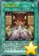 | 灵魂的降神 | [魔法|仪式] 「灵魂鸟神-姬孔雀」「灵魂鸟神-彦孔雀」的降临必需。 ①：等级合计直到变成仪式召唤的怪兽的等级以上为止，把自己的手卡·场上的怪兽解放或者作为解放的代替而把自己墓地的灵魂怪兽除外，从手卡把「灵魂鸟神-姬孔雀」或者「灵魂鸟神-彦孔雀」仪式召唤。 |
| 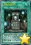 | 灵魂的据所 | [魔法|永续] 「灵魂的据所」的②的效果1回合只能使用1次。 ①：自己场上的灵魂怪兽的攻击力·守备力上升500。 ②：自己场上的表侧表示的风属性怪兽回到自己手卡的场合才能发动。从卡组把1只灵魂怪兽或者1张仪式魔法卡加入手卡。 |
 | 超级量子必杀 阿尔方球 | [魔法] ①：自己场上有「超级量子战士」怪兽3种类以上存在的场合才能发动。对方场上的卡全部回到持有者卡组。那之后，对方从额外卡组把1只怪兽无视召唤条件特殊召唤。 ②：从自己墓地把这张卡和1只「超级量子妖精 阿尔方」除外才能发动。从卡组把1张「超级量子机舰 炎磁大母舰」发动。 |
| 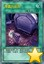 | 愚蠢的副葬 | [魔法] 「愚蠢的副葬」在1回合只能发动1张。 ①：从卡组把1张魔法·陷阱卡送去墓地。 |
 | 光波分光 | [陷阱] ①：自己场上的持有超量素材的「光波」超量怪兽被战斗或者对方的效果破坏送去自己墓地的场合，以那1只怪兽为对象才能发动。那只怪兽从墓地特殊召唤，把1只和那只怪兽同名的超量怪兽从额外卡组特殊召唤。 |
| 古代的机械苏生 | [陷阱|永续] ①：「古代的机械苏生」在自己场上只能有1张表侧表示存在。 ②：1回合1次，自己场上没有怪兽存在的场合，以自己墓地1只「古代的机械」怪兽为对象才能发动。那只怪兽特殊召唤。这个效果特殊召唤的怪兽的攻击力上升200。 | |
| 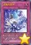 | 灵魂的圆环 | [陷阱|永续] 「灵魂的圆环」的①②的效果1回合各能使用1次。 ①：这张卡在魔法与陷阱区域存在，自己场上的表侧表示的灵魂怪兽回到自己手卡的场合，以对方场上1张卡为对象才能发动。那张卡破坏。 ②：对方怪兽的攻击宣言时把自己墓地1只灵魂怪兽除外才能发动。那次攻击无效，那之后战斗阶段结束。 |
| 不知火流 轮回之阵 | [陷阱|永续] ①：这张卡只要在魔法与陷阱区域存在，卡名当作「不知火流 转生之阵」使用。 ②：1回合1次，可以从以下效果选择1个发动。 ●把自己场上1只表侧表示的不死族怪兽除外才能发动。这个回合，自己受到的全部伤害变成0。 ●以除外的2只自己的守备力0的不死族怪兽为对象才能发动。那2只怪兽回到卡组洗切。那之后，自己从卡组抽1张。 | |
| 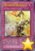 | 通向魂源的影劫回归 | [陷阱] ①：以自己场上1只「影依」怪兽为对象才能发动。从手卡把1张「影依」卡送去墓地。作为对象的怪兽攻击力·守备力上升1000，结束阶段变成里侧守备表示。 |
| 影之卡组破坏病毒 | [陷阱] ①：把自己场上1只守备力2000以上的暗属性怪兽解放才能发动。对方场上的怪兽，对方手卡，用对方回合计算的3回合内对方抽到的卡全部确认，那之内的守备力1500以下的怪兽全部破坏。 |
常见问题
Q.某张卡有BUG！
A.请到页面下方留言反馈，或联系233服QQ群里的尸体233（QQ：921439818）。
Q.卡片右下角的黄色星星是什么意思？
A.表示那张卡暂未有实卡，是先行卡。其卡片密码暂时使用临时密码（1开头的9位数）。
这种卡需要在23333端口才能使用。此外部分使用同样密码体系的服务器（不包括Checkmate）也可以使用。
实卡发售后，对应的带星星的先行卡会失效，请更新游戏，来获取正式的版本。
Q.卡片右下角的绿色加号是什么意思？
A.表示那张卡已有实卡但YGOPRO的国内官方版本暂未更新，是本补丁增加的卡片。其卡片密码是正式密码。
这种卡在233端口更新前只能在23333端口使用。但其他更新速度较快的服务器（包括Checkmate）一般也可使用。
一般这种卡不久就会正式更新到233服，请关注公告，更新后请下载YGOPRO的正式更新来获取那些卡。
Q.为什么安装了最新的先行卡补丁仍然没有某些卡？
A.本补丁只包含先行卡，不包含已经正式更新的卡。
请下载YGOPRO的正式更新来获取那些卡。
Q.为什么我更新先行卡补丁之后反而有卡消失了？
A.因为那些卡已经不再是先行卡了，本补丁不再包含它们。
请下载YGOPRO的正式更新来获取那些卡。
Q.安装后没有新卡？
A.本补丁附带新卡列表的卡组。
请确保你把文件解压到了游戏文件夹里，而不是新建了一个文件夹。
电脑版需要重启游戏才能重新载入数据库。
手机版需要自定义数据库，详见使用方法。
Q.安装后新卡没有卡图？
A.请确保你解压出来了压缩包里所有文件，不能只解压1个文件。
Q.手机版找不到sdcard文件夹？
A.部分手机可能位于storage或mnt文件夹里。
Q.手机版提示没有权限？
A.同上，换个文件夹试试。
Q.某张卡不能用，提示无效卡组？
A.本补丁的最新版只能与23333端口完美兼容。
请下载YGOPRO的正式更新，并更新先行卡补丁到最新版，把端口改为23333，才能正常使用先行卡。
Q.搜索卡片时发现有重复卡片？
A.因为本补丁是先行卡补丁，正式更新的卡片可能会与本补丁的卡片重复。删除或更新本补丁即可。
Q.电脑版怎么删除补丁？
A.删除expansions文件夹或其中pre-release.cdb即可。
Q.手机版怎么删除补丁？
A.点自定义卡片数据库下面的重置卡片数据库。
如果你打过其他的补丁，还需要再自定义一次数据库，选择cards.cdb。